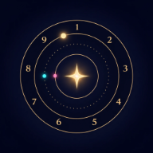

Numerologia do nome
Digite o nome completo, como está na certidão. Cada letra vira um número, e os números formam o seu mapa.
Entrar como consultor
Acesso restrito à administradora.
Acesse o seu resultado
Digite o e-mail cadastrado pelo seu consultor. Enviaremos um link de acesso, sem senha.
No iPhone: toque em Compartilhar e depois em “Adicionar à Tela de Início” para instalar o app.
Mensagem do seu consultor
Seu nome em letras
Vogais (Alma)Consoantes (Personalidade)

Leitura de Giulia Dantas, numerólogaSeus outros números
Toque em cada linha para ler a interpretação.
Dívidas cármicas
Mapa das letras
Quantas vezes cada número aparece no nome. Os que faltam indicam lições a desenvolver.
Bloqueios do nome
Bloqueios são os números que faltam ou aparecem em excesso no nome, além das dívidas cármicas. Cada escola de numerologia define de um jeito; aqui usamos a leitura pitagórica tradicional.
Toque em cada bloqueio para ver a indicação, o direcionamento, o que a vida quer ensinar e as soluções. É uma leitura simbólica para reflexão. Se o desconforto emocional for intenso ou constante, procure apoio profissional.
Ano pessoal
Muitas escolas contam o ano pessoal a partir do aniversário, não de 1º de janeiro.
Ciclos de vida
Três grandes fases regidas pelo mês, pelo dia e pelo ano de nascimento. O 1º ciclo vai até 37 menos o seu Destino; o 2º dura 27 anos; o 3º segue até o fim da vida.
Desafios
Obstáculos de cada ciclo, pela diferença entre mês, dia e ano.
Momentos decisivos
Quatro períodos que trazem oportunidades, sobretudo no lado profissional.
Triângulo da vida
Cada letra vira um número. Somando os vizinhos e reduzindo a um dígito, forma-se o triângulo invertido. Três ou mais números iguais lado a lado são lidas como sequência negativa na tradição cabalística. Os Arcanos do Tarô egípcio, que também se leem nesse triângulo, não estão incluídos.
Ver o triângulo
Leitura simbólica para reflexão, sem previsão de saúde ou de acontecimentos.
Pirâmide de desafios
Obstáculos de cada fase da vida, calculados por subtração dos números da data de nascimento. As idades são aproximadas.
1º = |mês − dia| · 2º = |dia − ano| · principal = |1º − 2º| · 4º = |mês − ano|
Relatório completo
Uma leitura que une todos os números do nome, como num atendimento.
Se a impressão não abrir aqui, use Copiar relatório e cole num documento.
Sintonia entre os dois
Os números-mestres 11, 22 e 33 são comparados como 2, 4 e 6. A compatibilidade numerológica é uma leitura simbólica: não prevê nem decide a qualidade de uma relação.
Leitura de numerologia cabalística, uma tradição simbólica de autoconhecimento. Não substitui a sua fé nem o acompanhamento de médico, psicólogo, advogado ou contador.
Salvar como cliente
Cadastra esta leitura para o cliente acessar com o e-mail dele. Ele verá apenas o próprio resultado, sem poder pesquisar nada.
Clientes
Cada cliente entra com o e-mail cadastrado e vê apenas o próprio resultado. Use “Enviar acesso” para mandar o link de entrada para o e-mail dele.
Como o cálculo funciona
Cada letra vale um número de 1 a 9. Acentos e cedilha são aceitos e aparecem no nome, mas não mudam o valor da letra (É vale o mesmo que E). O Y conta como vogal quando não tem outra vogal ao lado (como em Mary ou Lynn) e como consoante nos demais casos (como em Yasmin ou Ryan). As somas são reduzidas até um dígito, mantendo os números-mestres 11, 22 e 33.
Sistema cabalístico (tabela brasileira): 1 = A I J Q Y; 2 = B K R; 3 = C G L S; 4 = D M T; 5 = E H N; 6 = U V W X; 7 = O Z; 8 = F P. O acento agudo soma 2, o circunflexo soma 7, o til soma 3 e o Ç vale 6; o acento grave e o trema contam como a letra simples. O Y conta como vogal. Todas as somas são reduzidas até um dígito, sem números-mestres. O Ano Pessoal usa o dia e o mês de nascimento com o ano do último aniversário e muda no dia do aniversário; o Mês Pessoal soma o ano pessoal ao número do mês. O triângulo do nome soma as letras vizinhas, e o mesmo número 3 vezes seguidas numa linha é um bloqueio. Em “Qual nome usar”, o app testa combinações dos seus próprios nomes, a inicial de um nome que ficou de fora e a grafia sem acento. Confirmado contra leituras reais: a tabela de letras (exceto o X), o acento agudo, o Y como vogal e o triângulo. As demais regras (X, circunflexo, til, cedilha e grave) seguem fontes brasileiras e podem variar entre escolas.
Expressão: todas as letras. Alma: vogais. Personalidade: consoantes. Caminho de Vida: dia, mês e ano de nascimento. Maturidade: Caminho de Vida + Expressão. Desafios: diferenças entre dia, mês e ano reduzidos a um dígito. Compatibilidade: compara os mesmos números das duas pessoas, agrupados em 1-5-7, 2-4-8 e 3-6-9. Numerologia é uma tradição simbólica de autoconhecimento, não uma ciência.